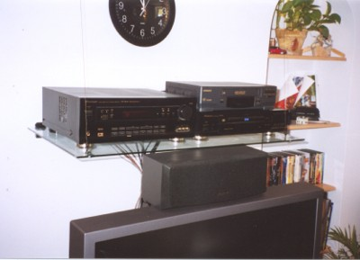
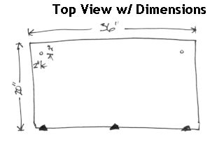
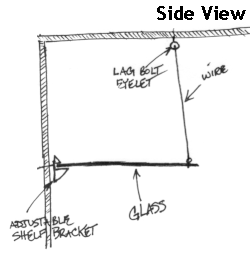
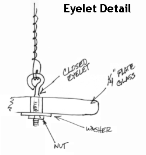

I didn't want wood because it wasn't elegant enough for a shelf that juts out 20". I looked at glass shelving, but the kits they sell in home stores can't really hold the weight I intended. I search the web using many a search term. One company offered hardware of the exact nature that I wanted, but the specs for the system limited the shelf depth to 16", 4 short of what I wanted. I toyed with the idea of exceeding the specs, because most hardware can probably exceed the capabilities of the spec, but I chose not to.
What I did find at this company, was a very attractive shelf bracket. An idea struck upon me to combine this bracket with cables to make a glass shelf that could carry the weight of the equipment with the size of glass I needed.
| Here are the dimensions of the shelf and the location of the 1/4" holes. The black triangles will be the location of the adjustable shelf brackets. |  |
| This diagram illustrates the overall assembly
to the wall and ceiling.
Get a partner to help you put it up. Note that the angle of the wire is probably not going to be exactly 90 degrees. That is alright because it is really quite invisible. |
 |
| Detailed view of the assembly of the eyelets.
Here you see that the wire is looped twice around the eyelet to add a little more friction. The wire is cut about 2-3" longer so that it can be twisted about itself. This diagram does not show the felt pad between the glass and the washer. |
 |
Finally, I should note that I am providing these plans without any warranty.
Thus, it worked for me, but I'm not an engineer and it might just fall
for you. I don't want to be held responsible. The people who cut glass
will be able to tell if the glass will handle the weight.